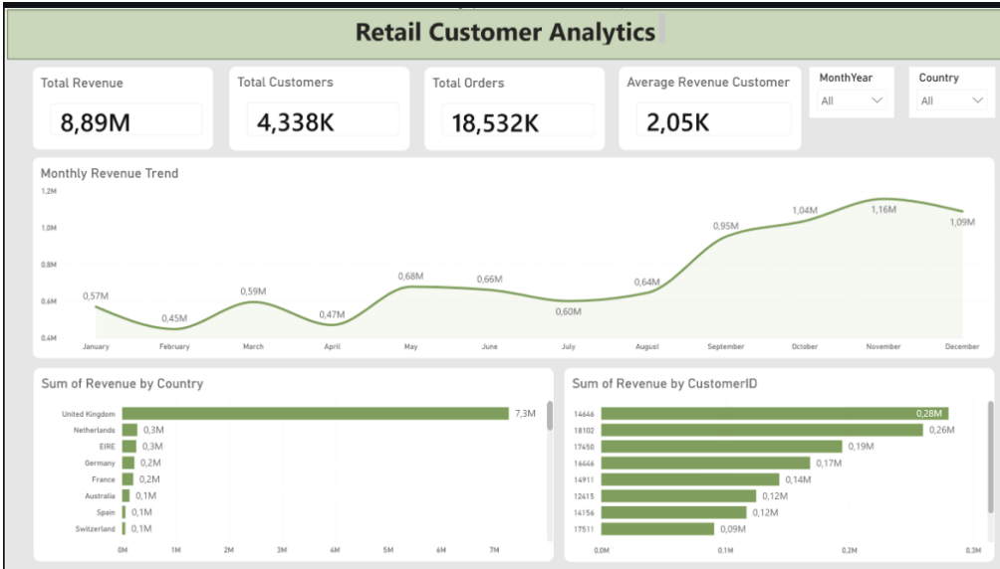
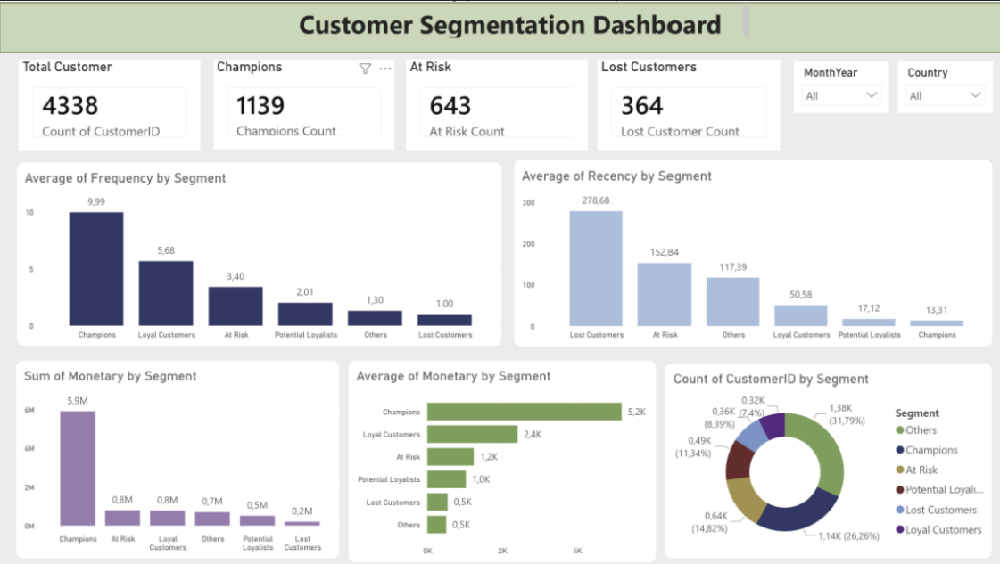
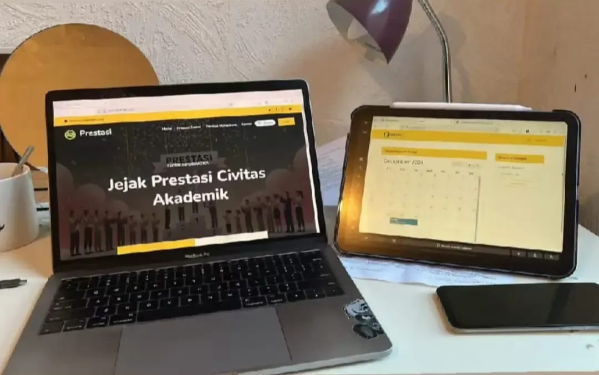
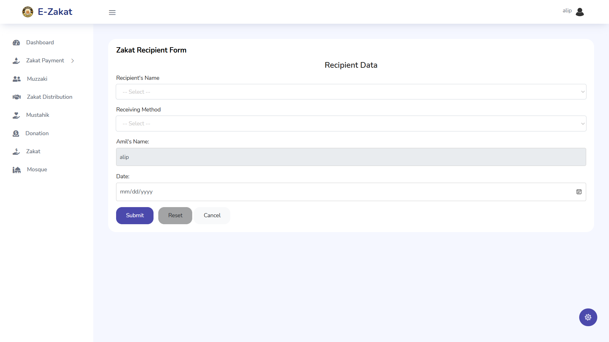

Proyek
Portofolio Proyek
Kumpulan proyek yang saya kerjakan sebagai implementasi kemampuan di bidang Data Analytics, Machine Learning, System Analysis, serta Web Development.
Data Analytics & Machine Learning
Proyek yang berfokus pada analisis data, visualisasi data, machine learning, business intelligence, dan system analysis.

Retail Sales Analytics Dashboard
Power BI • Python • SQLDashboard interaktif untuk menganalisis lebih dari 20.000 transaksi penjualan retail. Proyek ini mencakup proses ekstraksi data menggunakan SQL, analisis menggunakan Python, serta visualisasi menggunakan Power BI untuk menghasilkan insight bisnis.

Retail Customer Analytics & Segmentation
Python • Power BI • RFM AnalysisMelakukan segmentasi pelanggan menggunakan metode RFM dan Pareto Analysis untuk mengidentifikasi pelanggan bernilai tinggi serta menghasilkan rekomendasi strategi pemasaran berbasis data.
Web Development
Beberapa proyek website yang saya kembangkan menggunakan HTML, CSS, JavaScript, PHP, Java, dan MySQL.

Jejak Prestasi
PHP • PostgreSQL • BootstrapJejak Prestasi merupakan sistem informasi berbasis web yang dirancang untuk mendokumentasikan dan mengelola data prestasi mahasiswa dan dosen secara terpusat. Sistem ini menyediakan fitur pengelolaan data, unggah bukti prestasi, validasi oleh administrator, serta pelaporan sehingga proses pencatatan prestasi menjadi lebih efektif dan terorganisir.
E-Zakat Management System
PHP Laravel • MySQL • BootstrapSistem informasi pengelolaan zakat berbasis web yang dikembangkan menggunakan Laravel. Sistem menyediakan fitur pengelolaan muzaki, mustahik, jenis zakat, transaksi pembayaran, distribusi dana zakat, manajemen masjid mitra, dashboard, serta pelaporan yang terintegrasi untuk meningkatkan transparansi pengelolaan zakat.

Transaksi Zakat

Dashboard

Coffee Shop Website
HTML • CSS • JavaScript • PHPWebsite profil coffee shop dengan tampilan responsif, informasi produk, menu, galeri, dan kontak pelanggan.

Digital Invitation Website
HTML • CSS • JavaScriptWebsite undangan digital yang dilengkapi countdown, galeri foto, lokasi acara, buku tamu, dan desain responsif.